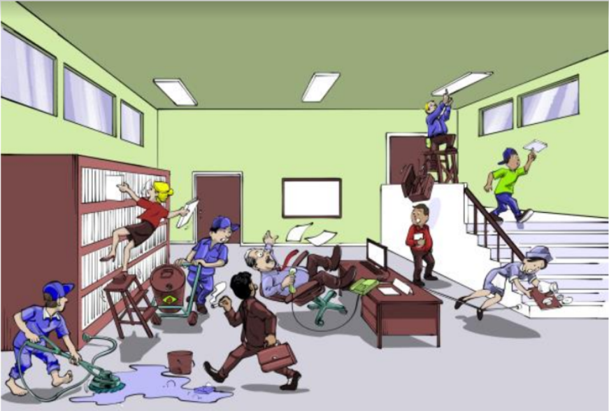

Saúde e segurança do trabalho
Analise as condições do ambiente e identificar, na sua análise, os riscos relacionados aos atos
inseguros.

Nesse ambiente de trabalho há varias situações negligentes, essas situações podem ocasionar
em acidentes graves com sérios riscos á saúde e a vida humana.
Abaixo estão listados os riscos mostrados na imagem.
Nessa imagem o descuida da mulher ocasionou na sua queda, a não utilização
dos equipamentos de segurança pode agravar os efeitos dessa queda e com
vestes inadequadas para a realização segura da atividade .
Nessa situação, a falta de sinalização e de atenção com certeza pode
provocar uma queda, que pode ser extremamente perigosa e prejudicial à
saúde do funcionário.
O desleixo desse colaborador de não
colocar um aviso “piso molhado” pode
ser a causa de um acidente grave,
tirando o fato de que ele está descalço, o
que também é um risco para sua
integridade física nesse local.
Nessa situação , além de oferecer risco para a
integridade fisica da colega de trabalho,ele oferece para todos que estão
no local, correndo o risco de derramar liquido inflamavel.
A postura indevida desse senhor no ambiente de trabalho, juntamente
com seu descuido, provocou sua queda.
A sua conduta no ambiente de trabalho, ligada com o descuido do seu
colega de equipe abriu a possibidade de um acidente
provavelmente muto grave.
Nesse caso em especifico, o desleixo de quem montou a fiação do
computador não teve nenhuma consideração com os
demais trabalhadores, ocasionando em um acidente GRAVE.
A falta de equipamentos adequados para a realização de suas
atividades e de segurança é com certeza um agravante de toda situação
propicia ao acidente de trabalho, igual demostrado na imagem ao lado.
A falta de atenção desse colaborador
causará um acidente prejudicial à sua
saúde.